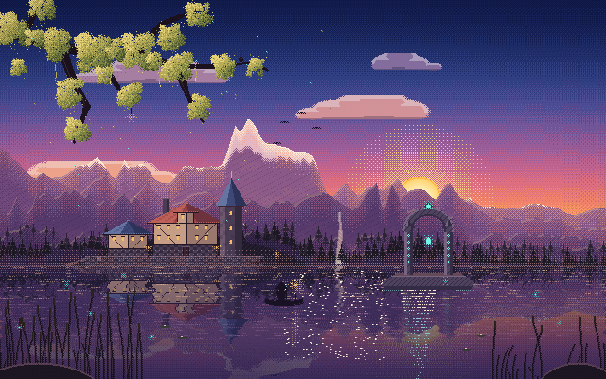
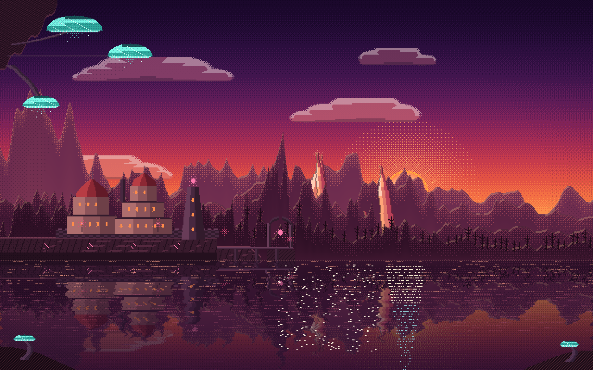
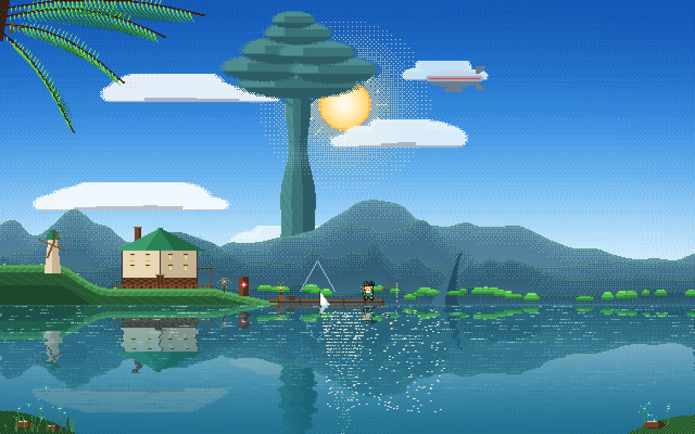
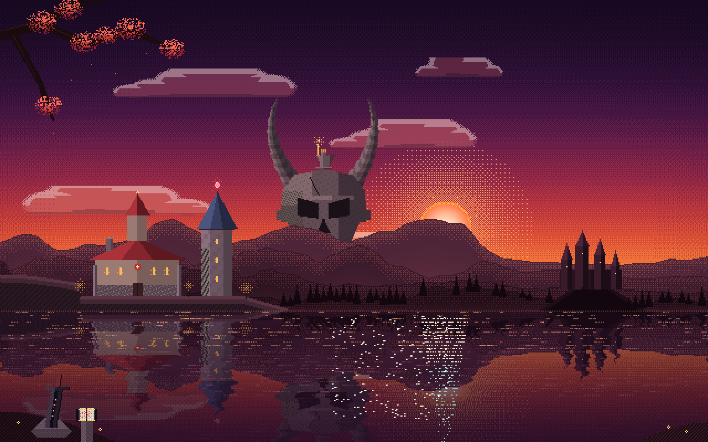
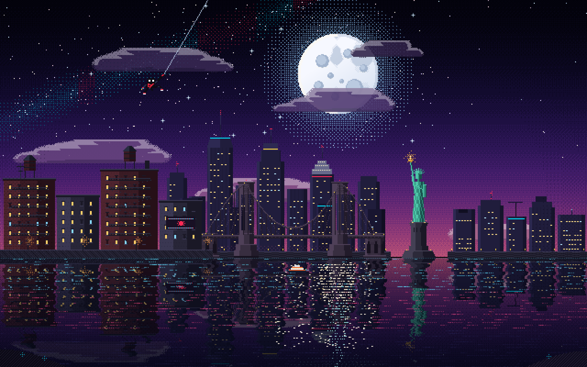

Región de Fittoa
fittoa
Aldea de Buena con la Mansión Greyrat, noria, torre de mago, cascada lejana, barca con farol, arco rúnico sobre el lago y Gran Roble con búho nocturno.
Motor modular de fondos animados en 640×400 con interpolación astronómica entre día, atardecer dorado y noche estrellada — en tiempo real o en un ciclo completo de 24 horas en 90 minutos.
Cada escena se compila en capas RGBA independientes (cielo, sol, luna, nubes, paisaje y mapa de luces) para animarse en tiempo real.

fittoa
Aldea de Buena con la Mansión Greyrat, noria, torre de mago, cascada lejana, barca con farol, arco rúnico sobre el lago y Gran Roble con búho nocturno.

continente-demoniaco
Ciudadela escalonada de Rikarisu sobre acantilados de basalto, zigurats con cúpulas con cuernos, aguja de obsidiana, portal fracturado, cristales gigantes y hongos bioluminiscentes.

hunter-x-hunter
Costa verde con molino, cabaña de Mito-san, monolito del Cazador, muelle largo con velero y Gon pescando, roca aleta de ballena, dirigible y el colosal Árbol del Mundo.

black-clover
Iglesia gótica de Hage, Torre de Grimorios con hiedra, Cráneo Gigante del Demonio con la estatua del Primer Rey Mago, Castillo Real lejano y espada Matademonios con grimorio flotante.

spiderman-miles-morales
Edificios de ladrillo de Brooklyn con escaleras de incendios y depósitos de agua, cartel neón Spider-Verse, Puente de Brooklyn anclado, Estatua de la Libertad iluminada, ferry de Staten Island, rascacielos de Manhattan reflejados en el East River y Miles Morales balanceándose en el cielo.
Calcula elevación y acimut solar/lunar según tu latitud, o recorre las 24 horas en 90 minutos mediante systemd en Linux y temporizador en Windows.
src/pz_lib.py genera cada píxel con tramado Bayer 4×4, ruido fractal y recorte alfa exacto (matte blanco/negro) sin requerir Pillow ni editores externos al compilar.
Renderiza en Main.layoutManager._backgroundGroup con escalado NEAREST, pausa automática en pantalla completa y tarjeta HUD con métricas reales del sistema.
Copia escenas/_plantilla, edita tema.json y generar.py, y ejecuta python3 src/construir.py para compilar paquetes para Linux y Windows a la vez.
# 1. Instalar la extensión con ciclo de 24h en 90 minutos
cd linux
./instalar.sh --90m
# 2. Cambiar entre los 5 fondos disponibles
./tema.sh --listar
./tema.sh spiderman-miles-morales
./tema.sh hunter-x-hunter
./tema.sh black-clover
./tema.sh continente-demoniaco
./tema.sh fittoa
# 3. Controlar la hora del cielo
./hora.sh 90m # Ciclo de 24h en 90 minutos
./hora.sh real # Hora real del reloj
./hora.sh demo # Demo rápida (24h en 90s)
./hora.sh 21:30 # Congela una hora fija# Opción A: Lively Wallpaper (animado completo + HUD)
# Abre windows/lively/index.html desde Lively Wallpaper y elige el tema en Personalizar.
# Opción B: Selector interactivo o Python standalone
windows\ejecutar.bat
python windows/pixelzen_win.py --listar
python windows/pixelzen_win.py --tema spiderman-miles-morales --90m
python windows/pixelzen_win.py --tema black-clover --real# 1. Duplica la plantilla base
cp -r escenas/_plantilla escenas/mi-mundo
# 2. Personaliza colores, citas y paisaje 640x400
# escenas/mi-mundo/tema.json
# escenas/mi-mundo/generar.py
# 3. Compila las capas para Linux y Windows
python3 src/construir.py mi-mundo